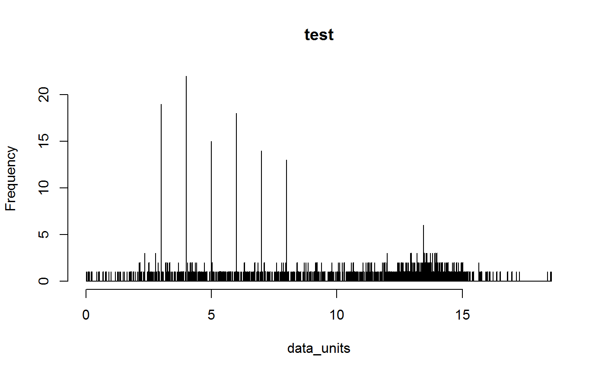
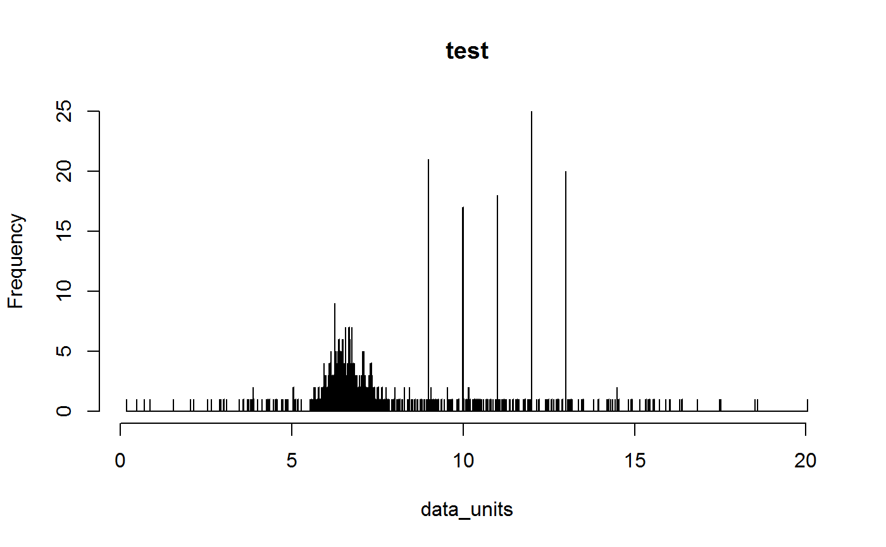
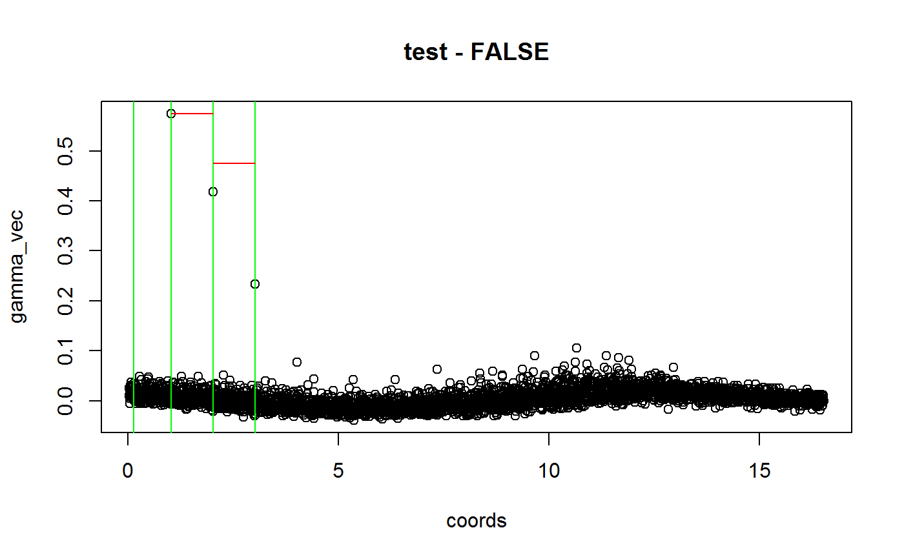

Flags datasets with periodicity patterns indicative of a rasterized (lattice) collection scheme, as often obtain from e.g. atlas data. Using a combination of autocorrelation and sliding-window outlier detection to identify periodicity patterns in the data.
cd_round(x, lon = "decimallongitude", lat = "decimallatitude", ds = "dataset", T1 = 7, reg_out_thresh = 2, reg_dist_min = 0.1, reg_dist_max = 2, min_unique_ds_size = 4, graphs = TRUE, test = "both", value = "clean", verbose = TRUE)
Arguments
| x | a data.frame. Containing geographical coordinates and species names. |
|---|---|
| lon | a character string. The column with the longitude coordinates. Default = “decimallongitude”. |
| lat | a character string. The column with the longitude coordinates. Default = “decimallatitude”. |
| ds | a character string. The column with the dataset of each record. In
case |
| T1 | numeric. The threshold for outlier detection in a in an interquantile range based test. This is the major parameter to specify the sensitivity of the test: lower values, equal higher detection rate. Values between 7-11 are recommended. Default = 7. |
| reg_out_thresh | numeric. Threshold on the number of equal distances between outlier points. See details. Default = 2. |
| reg_dist_min | numeric. The minimum detection distance between outliers in degrees (the minimum resolution of grids that will be flagged). Default = 0.1. |
| reg_dist_max | numeric. The maximum detection distance between outliers in degrees (the maximum resolution of grids that will be flagged). Default = 2. |
| min_unique_ds_size | numeric. The minimum number of unique locations (values in the tested column) for datasets to be included in the test. Default = 4. |
| graphs | logical. If TRUE, diagnostic plots are produced. Default = TRUE. |
| test | character string. Indicates which column to test. Either “lat” for latitude, “lon” for longitude, or “both” for both. In the latter case datasets are only flagged if both test are failed. Default = “both” |
| value | a character string. Defining the output value. See value. |
| verbose | logical. If TRUE reports the name of the test and the number of records flagged. |
Value
Depending on the ‘value’ argument, either a data.frame
with summary statistics and flags for each dataset (“dataset”) or a
data.frame containing the records considered correct by the test
(“clean”) or a logical vector (“flagged”), with TRUE = test passed and FALSE =
test failed/potentially problematic. Default =
“clean”.
Details
see supplement
Note
See https://github.com/azizka/CoordinateCleaner/wiki for more details and tutorials.
Examples
#simulate bias grid, one degree resolution, 10% error on a 1000 records dataset ##simulate biased fraction of the data, grid resolution = 1 degree #simulate non-biased fraction of the data bi <- sample(3 + 0:5, size = 100, replace = TRUE) mu <- runif(3, 0, 15) sig <- runif(3, 0.1, 5) cl <- rnorm(n = 900, mean = mu, sd = sig) lon <- c(cl, bi) bi <- sample(9:13, size = 100, replace = TRUE) mu <- runif(3, 0, 15) sig <- runif(3, 0.1, 5) cl <- rnorm(n = 900, mean = mu, sd = sig) lat <- c(cl, bi) #add biased data inp <- data.frame(decimallongitude = lon, decimallatitude = lat, dataset = "test") #plot overview suma <- inp suma[,1:2] <- round(suma[,1:2], 0) suma <- aggregate(dataset ~ decimallongitude + decimallatitude, FUN = "length", data = suma) colo <- rev(heat.colors(max(suma$dataset))) plot(suma$decimallatitude ~ suma$decimallongitude, col = colo[suma$dataset])#run test cd_round(inp, value = "dataset")#>#> dataset lon.n.outliers lon.n.regular.distance lon.regular.distance lon.flag #> 1 test 4 3 1 FALSE #> lat.n.outliers lat.n.regular.distance lat.regular.distance lat.flag summary #> 1 4 2 1 FALSE FALSE